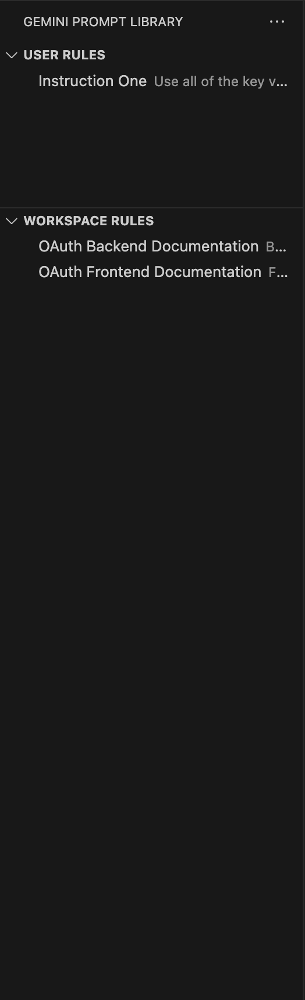
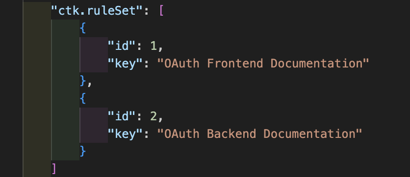

VSCode-Extension
by Carson Kempf
Gemini Prompt Library
1
I was tired of my resources for Gemini looking like this:

2
So I made an extension that allows key-value pairs to be used for Gemini’s resources.

3
It does this by mapping keys to id’s

4
So that our resources section can still look like this:
5
But we only have to look at this:
Commands
CTK GEE: Add Global/Workspace Rule: Prompts for a new rule key and value and adds it.CTK GEE: Edit Global/Workspace Rule: Allows selecting and editing an existing rule’s key and value.CTK GEE: Delete Global/Workspace Rule: Allows selecting and deleting a rule.CTK GEE: View Global/Workspace Rules: Displays the current rules.CTK GEE: Force Sync Global/Workspace Rules: Manually re-synchronizesctk.ruleSetwithgeminicodeassist.rules.